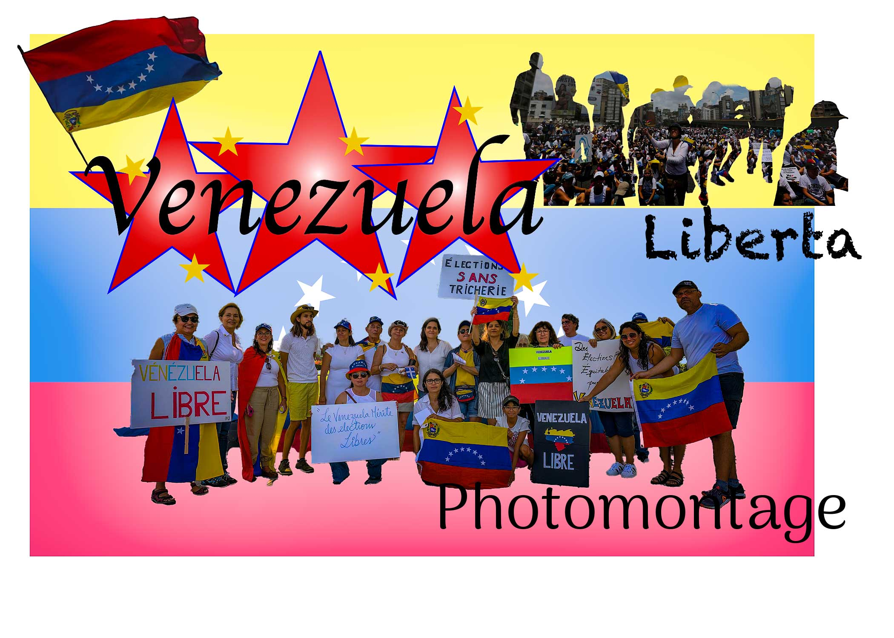
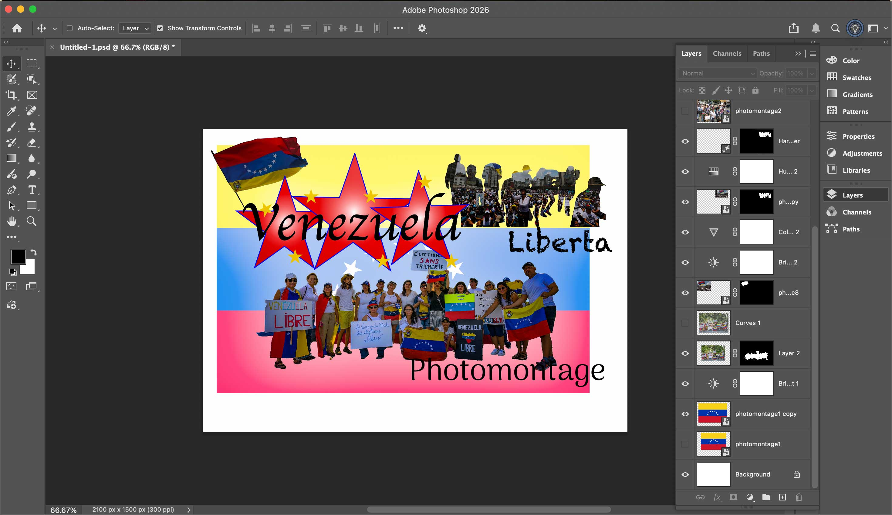

The issue I choose to explore is the political and social crisis in Venezuela. This topic is very close to me because I am mixed and my family comes from Venezuela. I wanted to express the idea of liberation from dictatorship and highlight the struggles Venezuelans have faced. In cities like Caracas, people have protested for freedom and democracy while suffering from shortages of food, electricity, and other basic necessities. Through this project, I aimed to show both the pain and resilience of the Venezuelan people.
For this project, I used the Venezuelan flag as the main background to symbolize identity and unity. I incorporated additional images to build a visual narrative. Using the selection and masking tool, I created silhouettes of people protesting and filled them with images of Venezuelan crowds to represent collective resistance. I added another Venezuelan flag, using Illustrator, including the word “Liberta” which means free, to reinforce the theme of liberation. I also designed three stars in the colors of the Venezuelan flag and placed the word “Venezuela” in the center. The images were sourced from a public domain on Wikimedia, and I created the additional graphic elements using shapes and text in Illustrator.